Domain Enumeration
Iniziamo con l'enumerazione del dominio, assieme al mapping
di diverse entità, trusts, relazioni e privilegi del dominio target.
L'enumerazione può essere effettuata tramite Eseguibili Nativi o Classi .NET
Esempio con classe .NET:
E' possibile scrivere il tutto in Poweshell, senza intaccare i dischi ed usando solo la memoria!
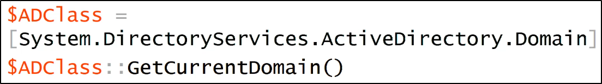
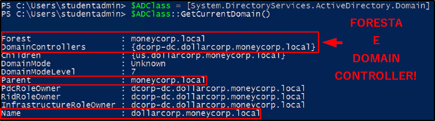
Poweview
Poweview è uno script in Powershell, usato per automatizzare l'enumerazione.
Github repo:
https://github.com/PowerShellEmpire/PowerTools/blob/master/PowerView/powerview.ps1
Ora si è spostato su un altro repo più recente:
https://github.com/PowerShellMafia/PowerSploit/blob/master/Recon/PowerView.ps1
Come importare lo script:
Basta disabilitare l'ExecutionPolicy ed eseguire lo script
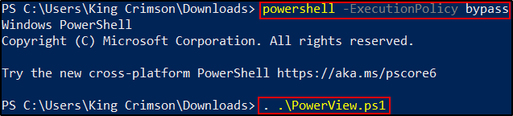
Active Directory Powershell Module
E' un modulo di Active Directory, utilizzabile tramite "Import-Module" da Powershell.
Per usare il modulo senza usare RSAT (Remote Server Administration Tools),
possiamo usare "Import-Module" per il modulo DLL ActiveDirectoy valido.
Un buon vantaggio è che è possibile usare questo modulo,
anche in constraint mode o limitati!
Documentazione:
https://docs.microsoft.com/en-us/powershell/module/addsadministration/?view=win10-ps
Modulo ed info su come installarlo:
https://github.com/samratashok/ADModule
Domain Enumeration (con PowerView ed ADModule)
Ecco alcuni esempi di come è possibile enumerare i domini con questi 2 strumenti:
Il comando sopra è PowerView, quello sotto è del modulo ADModule!
Ottieni il Dominio corrente:
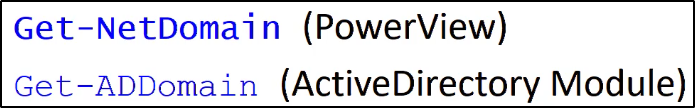
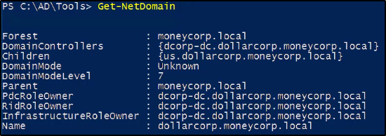
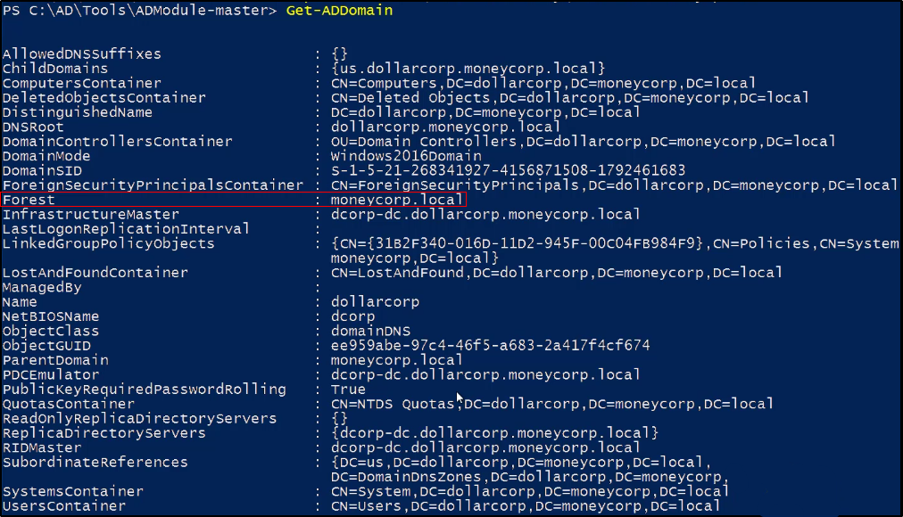
Ottieni un oggetto da un altro dominio:
In questo caso, "moneycorp.local" è il dominio padre di "dollarcorp.moneycorp.local".
Possiamo sfruttare la trust tra domain e figlio per ottenere informazioni!
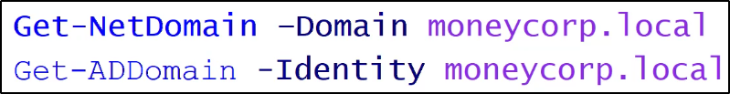
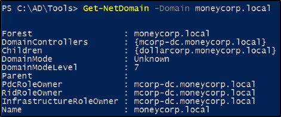
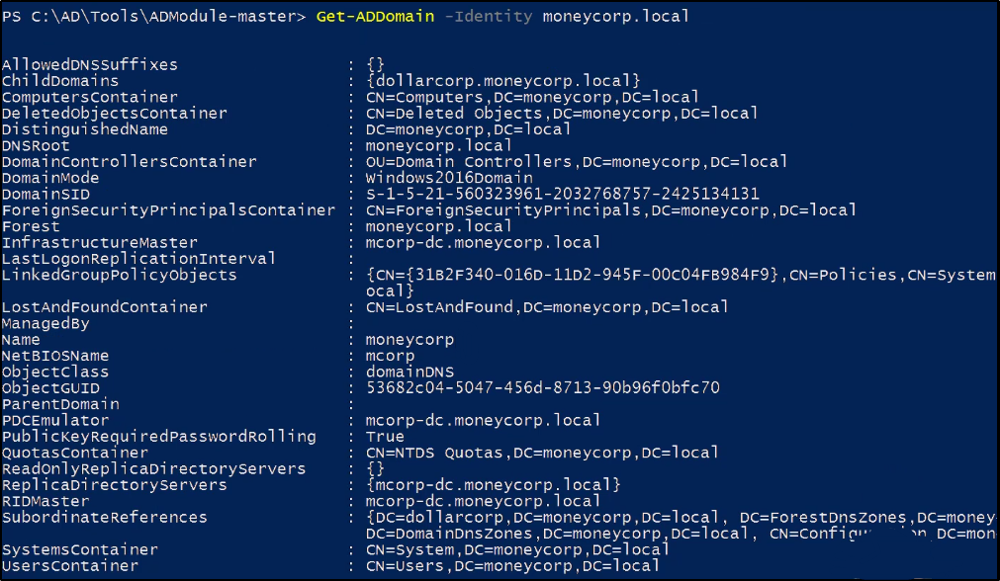
Ottieni il SID (Security Identifier) del dominio corrente:
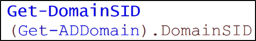
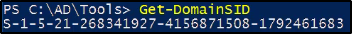
DomainSID può essere trovato per ADModule già in Get-ADDomain!
Puoi specificare l'elemento usando il punto.
Puoi vedere Domain Policy per il Domain corrente, con PowerView:
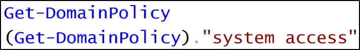

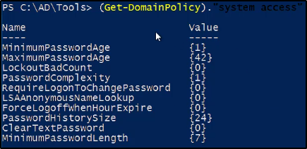
Si può vedere la Domain Policy di un dominio per il quale si ha trust, come quello padre!
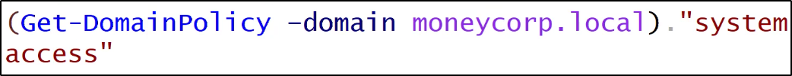